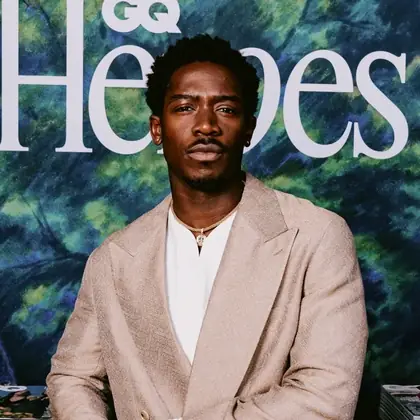
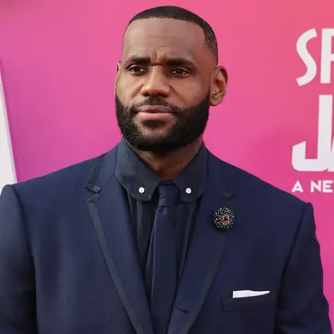
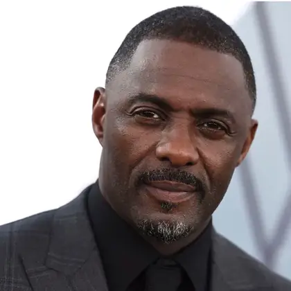

Accessibility
Writing semantic HTML, improving labels and checking pages with keyboard navigation.
Trainee Profiles
Our trainee developers learn by working on real client tasks while improving accessibility, performance and sustainable web practices.
Aisha focuses on accessible page layouts, clear heading structures and reusable CSS components. Her recent work reduced duplicated styles across a client landing page.
Project: keyboard-first careers page
Jordan audits image sizes and converts suitable assets to WebP. He compares before-and-after load times so clients can see performance improvements clearly.
Project: image compression report
Sofia supports form builds and data validation. She keeps interactions lightweight by using native browser features before adding JavaScript.
Project: low-script application flow
Mateo creates small reusable interface patterns so teams do not rewrite the same CSS across every project. He likes clean navigation and tidy component states.
Project: reusable card system

Dante Brooks Content design traineeDante works on clearer page copy, accessible link text and content layouts that help visitors scan quickly without loading unnecessary media.
Project: careers content refresh

Marcus King Testing traineeMarcus checks pages on mobile, tablet and desktop. He records usability issues and turns feedback into practical fixes before launch.
Project: responsive test schedule

Elias Carter Backend traineeElias supports efficient data handling and simple server-side validation plans. He focuses on keeping requests purposeful and secure.
Project: secure form handover notes
Kai compares page weight, image formats and load times before and after optimisation. He turns sustainability goals into measurable evidence.
Project: performance budget tracker
Trainees are encouraged to make practical, measurable improvements rather than adding unnecessary effects or heavy assets.
Writing semantic HTML, improving labels and checking pages with keyboard navigation.
Compressing images, reducing page weight and testing responsive layouts on mobile.
Choosing efficient code, avoiding autoplay media and keeping features purposeful.